Tavola 9 - Condizioni statiche, di conservazione, ingieniche e di occupazione


Tavola 9 - Condizioni statiche, di conservazione, ingieniche e di occupazione |
||
|
Tavola 9 Bis Legenga | |
| 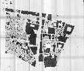 | Tavola 9 Bis I A 1 | |
| 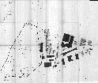 | Tavola 9 Bis I A 2 | |
| 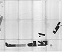 | Tavola 9 Bis I A 3 | |
|
Tavola 9 Bis I A 4 | |
| 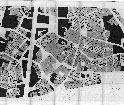 | Tavola 9 Bis I B 1 | |
| 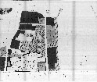 | Tavola 9 Bis I B 2 | |
| 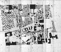 | Tavola 9 Bis I B 3 | |
| 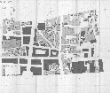 | Tavola 9 Bis I B 4 | |
| 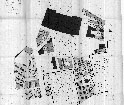 | Tavola 9 Bis II A 1 | |
| 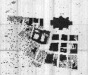 | Tavola 9 Bis II A 2 | |
| 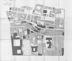 | Tavola 9 Bis II A 3 | |
| 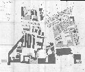 | Tavola 9 Bis II A 4 | |
| 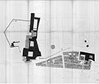 | Tavola 9 Bis II B 1 | |
| 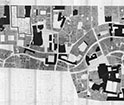 | Tavola 9 Bis II B 2 | |
| 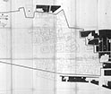 | Tavola 9 Bis II B 3 | |
| 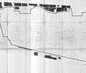 | Tavola 9 Bis II B 4 | |
| Elenco completo di tutti gli elaboarti del Centro Storico Palermo | ||